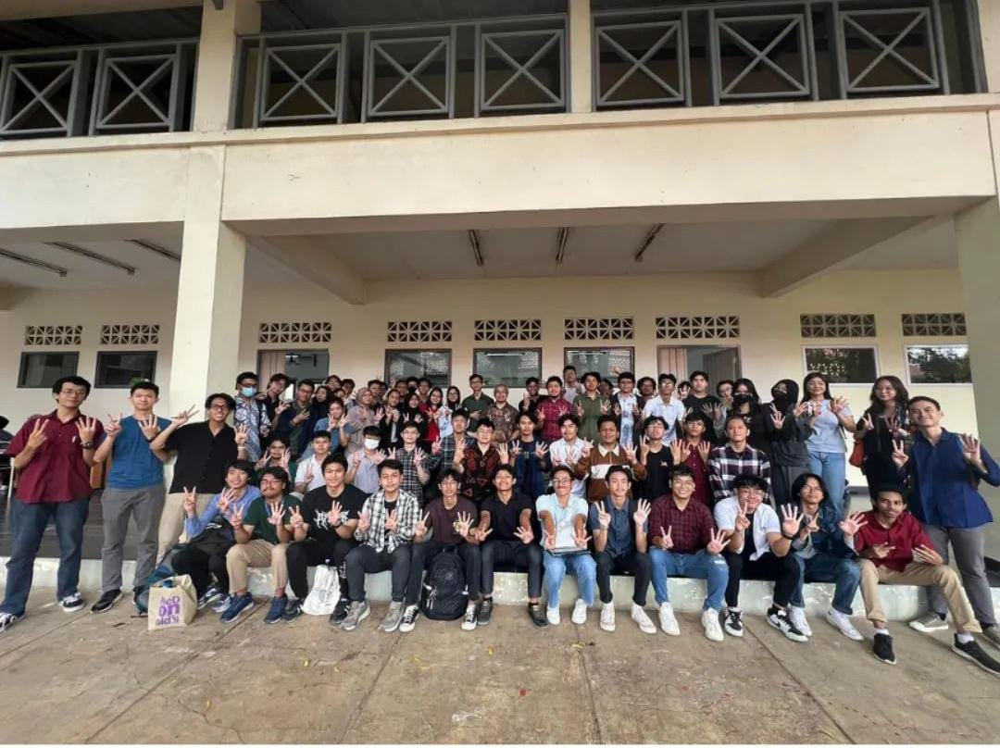

Home
Awal memasuki Institut Teknologi Bandung (ITB), Sekitar 6 bulan yang lalu sejak saya memasuki ITB. mendapatkan Teman yang baru di ITB adalah salah satu momen berharga buat saya Menjadi Mahasiswa Fakultas Sekolah Teknik Elektro dan Informatika
di Kota Bandung
Didepan Laboratorium Korea Information (KOICA), bertemu orang-orang yang berasal dari satu daerah yaitu Kota Medan, North Sumatera. Dalam Tahap Persiapan Bersama (TPB). Mahasiswa ITB dituntut menguasai Matematika Dasar dan Fisika Dasar.
Awal saya mengenal Dunia Coding menggunakan Python.
About
Mahasiswa TPB dari STEI ITB, Saya Christian Valerioksana setelah 6 bulan menjalani kuliah di ITB saya merasa bahwa diri saya masih kurang belajar dan masih kalah jauh jika dibandingkan teman Saya. Berhasil mendapatkan IPK Tinggi bukanlah
kebanggaan jika tidak bisa berelasi.
Menjalani Praktikum Fisika dan Kimia Dasar mengajarkan pentingnya ketelitian dan laporan, berada di luar kota memicu rasa kesepian namun saya tahu sekarang waktu saya berjuang bukan beristirahat. GDSC adalah Club yang saya ikuti karena
minat saya kepada program saya berlatih secara otodidak untuk menjalankan program.
Gallery
Sejak Berlalu semester 1 memiliki teman teman baru, berbeda dengan SMA ataupun SMP memiliki Teman baru ketika setelah 3 tahun Namun di kuliah memiliki Teman baru setelah selesai 1 semester setiap semester akan berganti teman yang ditemui
beragam orang dan berbagai lingkaran pertemanan.
Physics Laboratory

Foto gallery kenangan Praktikum Fisika Dasar 1A didepan Laboratorium ITB saya mengambil momen ini bersama teman sejadwal saya saat Semester 1. Saat semester 2 saya yakin akan jarang melihat mereka dimana.
Boarding ITB

Asrama ITB, Fasilitas yang disediakan ITB untuk tinggal disini. akses ke kelas yang dekat mengakibatkan banyak mahasiswa yang ingin Asrama Tapi hanya beberapa yang diterima. Saya menjadi salah satu penghuni asrama di ITB. Saya memiliki
banyak Teman di Asrama mulai dari yang sefakultas dan Berbeda Fakultas.